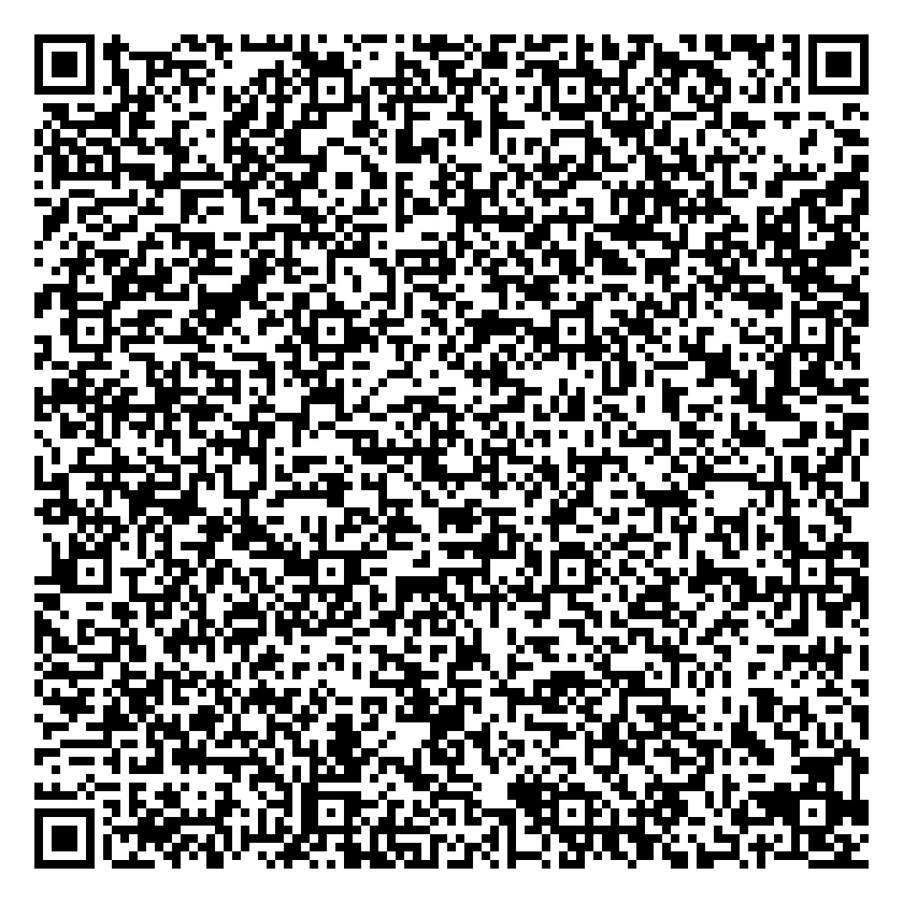

No login or account is required. These files are static and have no cookie, token, password, or expiry. The review dataset contains eight synthetic names and identifiers. Every address belongs to a public, non-residential facility.
광주광역시 광산구 장덕동 1681, verify the address, and save.Alternative: display the PNG QR below on a second screen, then tap QR 스캔 (Scan QR) in the app.

The QR stores the corresponding Korean legal-lot address used by the app's offline address data. The table shows each public facility and its public road address for easy verification.
| # | Facility | Type | Public road address |
|---|---|---|---|
| 1 | 수완호수공원 | Park | 광주광역시 광산구 장신로82번길 57 |
| 2 | 장덕도서관 | Public library | 광주광역시 광산구 풍영로 179 |
| 3 | 이야기꽃도서관 | Public library | 광주광역시 광산구 선운중앙로67번길 6 |
| 4 | 광주송정다가치문화도서관 | Public library | 광주광역시 광산구 송정공원로 8-13 |
| 5 | 광산구빛고을국민체육센터 | Public sports facility | 광주광역시 광산구 무진대로211번길 28 |
| 6 | 수완문화체육센터 | Public sports facility | 광주광역시 광산구 왕버들로132번길 11 |
| 7 | 첨단도서관 | Public library | 광주광역시 광산구 임방울대로 673-12 |
| 8 | 하남도서관 | Public library | 광주광역시 광산구 손재로 120 |
All names and allocation identifiers in this QR are fabricated for review. No real person's name, residential test address, phone number, account, credential, or live work record is included. Chekomma is independently developed and is not issued or endorsed by a government agency.
{kind=link}